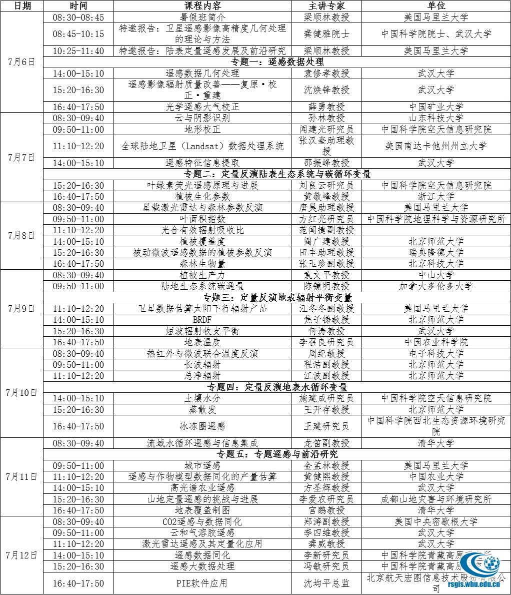

武汉大学遥感信息工程学院是集遥感、测绘、空间信息工程技术于一体的信息和工程类学院。武汉大学定量遥感研究中心成立于今年一月，依托教育部批准武汉大学设立的“遥感科学与技术”交叉学科进行建设，主要研究领域包括定量遥感的基础理论与方法、卫星遥感产品研发、区域性的天空地观测网络建立以及定量遥感的气候、环境、农业等方面的应用。本届暑期学校由武汉大学遥感信息工程学院主办，武汉大学定量遥感研究中心承办，并得到学校研究生院、本科生院和北京航天宏图信息技术股份有限公司的大力支持。
一、课程内容
本届暑期学校课程内容主要涵盖遥感数据处理、定量参数反演、卫星产品和资源环境应用等方面，将由国内外知名遥感专家和优秀的中青年学者线上授课。课程内容涉及定量遥感领域中大气遥感、植被遥感、土壤遥感、农业遥感、水文遥感、城市遥感、大数据处理等多个方向，将通过近40个报告与专题讲座系统介绍定量遥感研究中的理论方法、技术与应用，交流定量遥感发展的最新研究进展和应用。
二、课程时间和方式
课程时间：2020年7月6日-7月12日
授课方式：线上授课，具体情况详见第二轮通知
三、课程安排与主讲专家（以实际课表为准）

四、招生条件
参加学习的人员应当符合下列条件：
1、测绘遥感相关专业在读硕士生、博士生、优秀高年级本科生、高校青年教师与科研机构研究人员、遥感相关企业技术人员；
2、接受过遥感相关课程的学习，了解遥感、GIS软件，具备一定的遥感基础知识和遥感数据处理能力；
3、希望系统了解定量遥感学科前沿研究工作。
五、报名须知
1、本次暑期学校通过“活动行”平台报名，链接为：https://www.huodongxing.com/event/1541289395000（见文末二维码）。请学员在2020年5月31日前按活动要求提供真实的个人信息在线报名。报名后，可在“活动行”平台查询报名情况。第二轮通知发布后，会务组将邮件通知学员授课细节。
2、本次暑期学校不收取学员任何费用，不提供任何补助。
3、暑期学校参考教材为2020年5月科学出版社再版的《定量遥感·理念与算法》，本次暑期学校限量提供免费教材，也可帮助学员联系出版商购买折扣教材，请在报名时注明相关信息。免费教材优先提供武汉大学在读学生。
4、全程参加暑期学校课程学习的学员，颁发由武汉大学遥感信息工程学院认定的“定量遥感暑期学校”结业证。
5、本届暑期学校班将通过武汉大学遥感信息工程学院官网http://rsgis.whu.edu.cn/和微信公众号发布最新信息，敬请关注。
6、武汉大学遥感信息工程学院保留此次暑期学校的最终解释权。
六、组织单位
主办单位：武汉大学遥感信息工程学院
承办单位：武汉大学定量遥感研究中心
七、联系方式
会务组联系人:
院办张老师 68778202
陈老师 18579187317
E-mail：chensirong@whu.edu.cn
武汉大学遥感信息工程学院
2020年5月12日